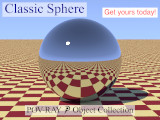

{kind=link}

 Caption is a library module from the Persistence of Vision Ray Tracer (POV-Ray) Object Collection that creates boxes with imprinted text. With an opaque or partially transparent box, this is useful for quickly annotating busy scenes where text might otherwise be difficult to read.
The italicized nnnnnn in some of the file names represents the 6-digit number that is in the name of the .zip file.
| Key Files | |
|---|---|
| File | Description |
caption.html |
The user manual (this document) |
caption.inc |
The Caption software |
caption.jpg |
Sample output |
caption.pov |
A demonstration scene file |
READMEnnnnnn.html |
Important information about using the POV-Ray Object Collection |
| Other Files | |
| File | Description |
caption.css |
A file used by the user manual |
caption_description.txt |
A brief description of Caption |
caption_keywords.txt |
A list of keywords |
caption_prereqs.txt |
Prerequisites (empty file) |
caption_prism.png |
Illustrations for the user manual |
caption_thumbnail.jpg |
|
cc-LGPL-a.png |
Administrative files |
Versionnnnnnn.js |
|
Requires POV-Ray version 3.5 or later.
All file names in this module and all global and local identifiers defined in caption.inc comply with the Object Collection naming standards, as revised August 2008 and proposed August 2012. The prefix for this module is “caption,” including any uppercase and lowercase variants; to avoid conflicts, do not declare identifiers that start with this prefix plus an underscore.
Include this file once prior to using any of the macros:
#include "caption.inc"
Including the file more than once is harmless, though unnecessary.
Note that as of POV-Ray version 3.7, objects positioned with screen.inc do not contribute radiosity to a scene.
This argument controls the color of the caption objects independent of the environmental lighting. The effect is slightly different depending on the version of POV-Ray.
Emission argument is negative, the ambient and diffuse finishes are turned off for the object, and the emission finish is set to 1.0.
Emission argument, and the ambient and diffuse finishes default.
Emission argument is negative, the diffuse finish is turned off for the object, and the ambient finish is set to 1.0.
Emission argument, and the diffuse finish defaults.
Returns a box with text printed on its −z face. The −z face will lie in the x-y plane.
s_Text:
s_Font:
v_Padding:
c_Object:
c_Background:
Emission:
Emission argument.
Returns a box with a cross section of an object imprinted on its −z face. The −z face will lie in the x-y plane. For predictable results, the object should be prismatic in form; that is, its cross section should not vary for any value of z.
Object:
v_Padding:
c_Object:
c_Background:
Emission:
Emission argument.
| Identifier | Type | Description | Value |
|---|---|---|---|
CAPTION_VERSION |
float | The Caption version, in case the caller needs to know. | 1.0 |
Any identifiers in caption.inc that are not documented in this manual are considered “private” or “protected,” and are subject to change or elimination in a future update.
| Version | Date | Notes |
|---|---|---|
| N/A | March 13, 2013 |
|
| 1.0 | December 23, 2013 |
|